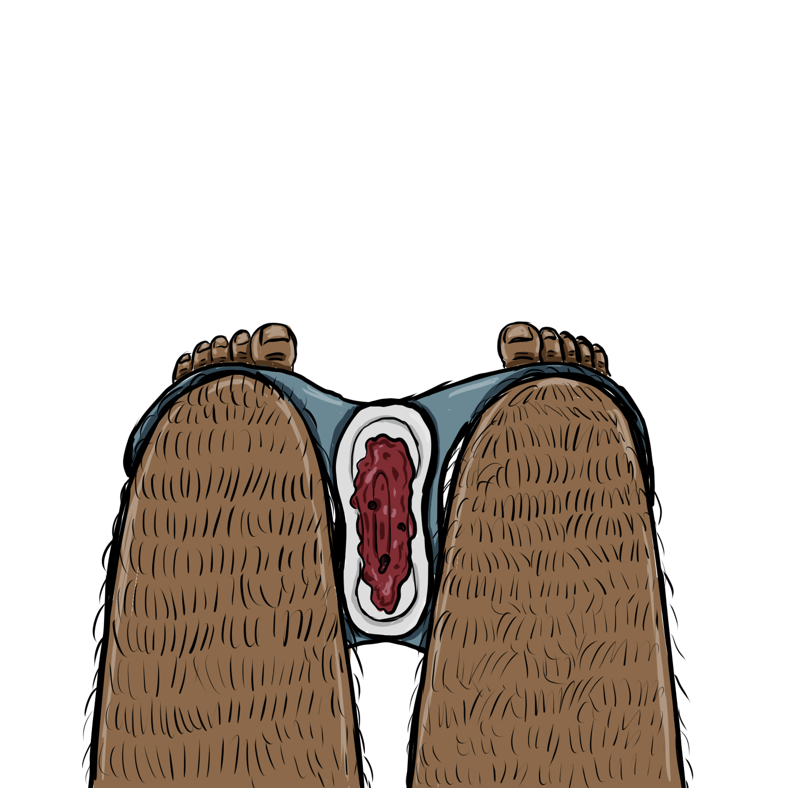

It was strange to see my blood on display, like the knife was a menstrual pad soaked in the grisly fluid.
I hadn’t had a period in a long time, though, and I didn’t plan on having one ever again. Just the sight of blood clots in my mind reminded me of the sour smell, the intensity of my cramps, and the way it would feel like a flood bursting through a dam. She opened me up again, cut into a vulnerable past I never imagined I’d return to.
Back when I hated my body more than anything else in the world.